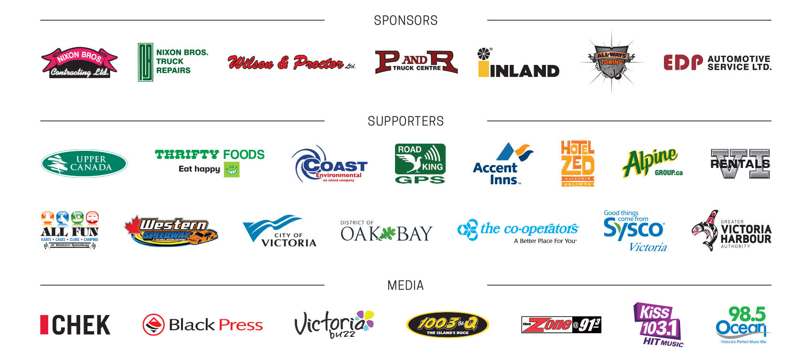

Annual Truck Light Convoy and Food Drive
Saturday, December 2, 2017
THANK YOU TO OUR EVENT SPONSORS

We are well underway to create this year's amazing event. We are creating lists of food donation locations for before the event and the night of the event as well as some great light up events happening along the route of our convoy. Check back for more information as the event draws closer, we look forward to your support in brightening up our communities with lights and food donations.
Check us out on page 32 of the November issue of Monday Magazine! or for a quick preview of the Monday Magazine
Some of our members will be headed over to Surrey for their "Santa Parade of Lights" click here to see details.
Don't forget the Esquimalt Celebration of Lights as well. http://esquimaltlights.ca/

Road King will be on the road with us this year providing GPS tracking of the convoy. On the night of the event you can track where they are by going to http://lightsparade-live.com/ on any device.
Watch the Convoy roll by at these approximate times and locations:
- Leave Ogden Point 5:45 pm
- Fairfield at Foul Bay 6:20 pm
- Oak Bay at Monteray 6:40 pm
- Blanshard at Yates 7:00 pm
- Douglas at Hillside 7:15 pm
- McKenzie and Island Highway 7:30 pm
- Helmcken overpass 7:40 pm
- Goldstream at Millstream 8:10 pm
- Arrive at Western Speedway 8:30 pm
Food Drop Off Locations: Prior to Convoy
Evening of December 2, 2017 - Events along the IEOA convoy route
Victoria
Ogden Point
Volunteers will be accepting a can of soup and food donations for the James Bay Community Project.
GVHA Ogden Point Christmas Light Up is on Saturday Dec 2 from 3 - 5:30 pm Popcorn by donation, local food trucks, beer garden, live Christmas music, photo booth and Santa too!
Tourism Victoria Visitor Center - Wharf Street at Gov't Street
Look for the Mustard Seed tent and volunteers collecting cash and food donations by the Tourism Victoria Visitor Centre.
The Bay Center
Look for the Mustard Seed tent and volunteers collecting cash and food donations outside the Bay Centre on Government Street.
Buddies Toys
103 - 1831 Oak Bay Ave
There will be an open door and warm place to wait for the trucks, kids can do a craft and drop off non perishable food donations.
Saanich
Hotel Zed
3110 Douglas Street
Look for collection bins in the lobby
Salvation Army
Uptown Shopping Mall
3440 Saanich Road
Look for volunteers with a donation kettle and rolling totes collecting food donations near the Noodle Box on Douglas Street.
Oak Bay
Oak Bay Village
A Public Works truck and The Mustard Seed will be set up in front of the Municipal Hall to receive food donations and issue receipts for cash donations. Enjoy music and treats in advance of the convoy.
Oak Bay Avenue
A truck will be parked at Cobs bread for donations and volunteers will collect from the crowd along Oak Bay Avenue from Foul Bay Road to Monterey Avenue.
View Royal
Helmcken Road & Watkiss Way
The View Royal Fire Department will be collecting food across the crosswalk from the Helmcken Market, look for their fire truck and volunteers at the intersection.
West Shore
View Royal Casino
1708 Island Highway
Collection boxes are located just between the front doors. Please note - you have to be 19 years of age to enter.
Serious Coffee
1703 Island Highway
101 – 2401G Millstream Rd
Look for the collection box inside, OPEN until 8:30 pm
Look for the collection box inside, OPEN until 9:30 pm
Juan de Fuca Recreation Centre
1767 Island Highway
Colwood Fire Department will be collecting food donations. Look for the 10 x10 tent that will be set up by the Colwood Fire Dept. pickup truck.
Colwood Corners
Look for the Emery Electric Truck parked by the Sands Funeral Chapel. Colwood Fire Department will be collecting food donations.
Thrifty Foods, Colwood
Look for the Smile Food Truck parked in the parking lot. They will be collecting food donations and offering hot drinks and snacks.
Veterans Memorial Parkway and Goldstream Avenue
11th Annual City of Langford Christmas Light up Celebration is from 5 - 8 pm. Bring your food donation and enjoy music and snacks and a visit with Santa as the convoy passes by.
Tim Horton's Coffee
1820 Island Highway
#840 – 2945 Jacklin Road
#102 - 2890 Westshore Pkwy
845 Goldstream Avenue
739 McCallum Road
Look for the collection box inside Open 24 hours
Look for the collection box inside Open 24 hours
Look for the collection box inside Open until 10:00 pm
Look for the collection box inside Open 24 hours
Look for the collection box inside Open 24 hours
Co-operators Insurance
101 - 2455 Millstream Rd
Stop by to warm up with hot chocolate, popcorn and a great view of the convoy passing by. Food donation boxes are inside the office.
Millstream Village Mall
2401 Millstream Rd
It's a Village party from 5-7:30pm! Join us to decorate Santa hats, color pictures, visit with Santa, eat cookies and listen to the Belmont School carolers. Food donations will be collected and there's lots of parking!
Western Speedway
2207 Millstream Road
A Salvation Army truck will be onsite in the All Fun Recreation lower parking lot to collect food donations and offer hot chocolate.
Admission to Western Speedway is by cash or non-perishable food donation. Look for the food collection truck parked at the admissions gate and enjoy the lights from the grandstands as the convoy arrives and parks.
After the trucks park the public is invited into the infield where there is a food collection van parked beside the infield concession and hot chocolate and hot dogs are offered by donation courtesy of the Central Saanich Lions.